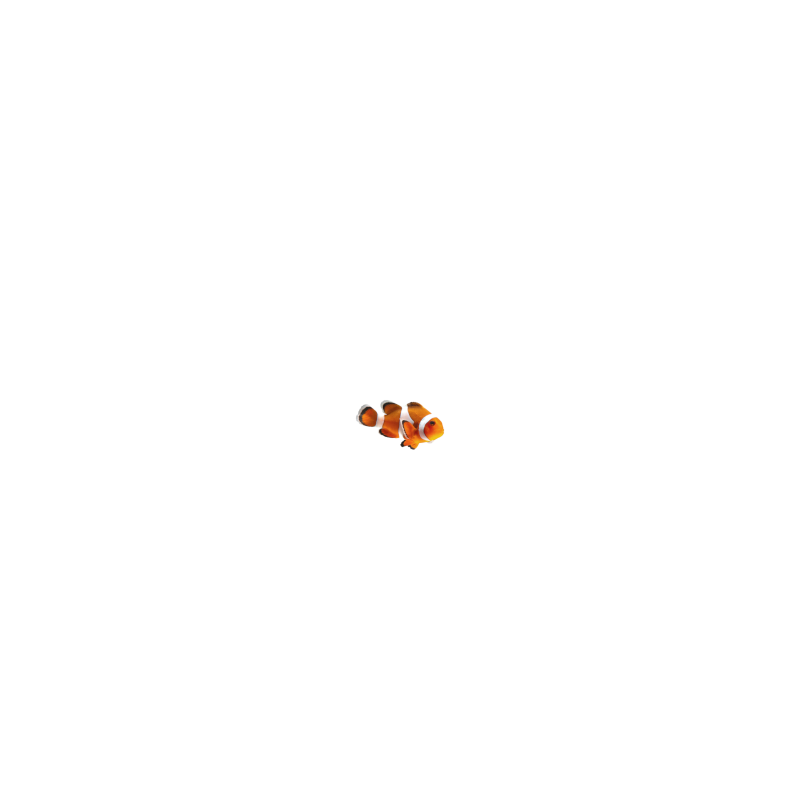
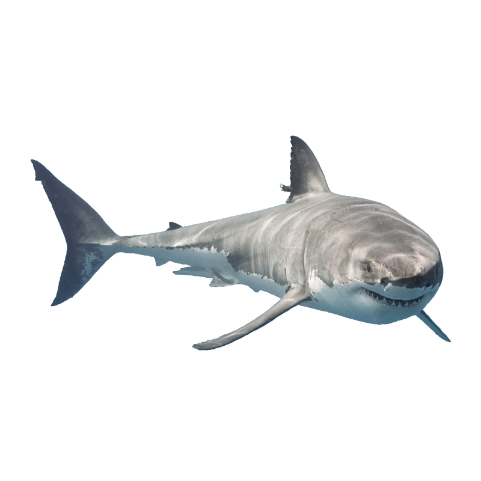
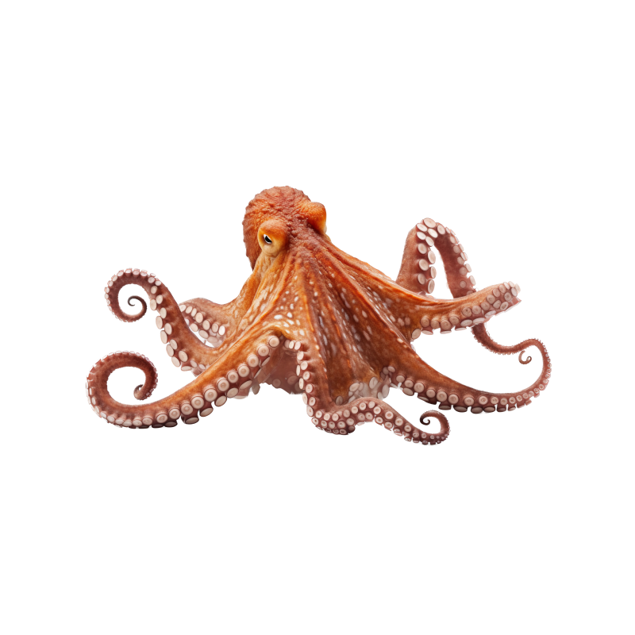
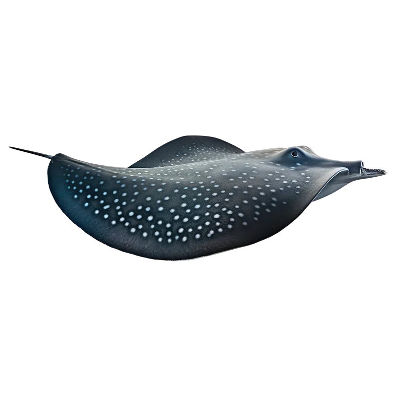
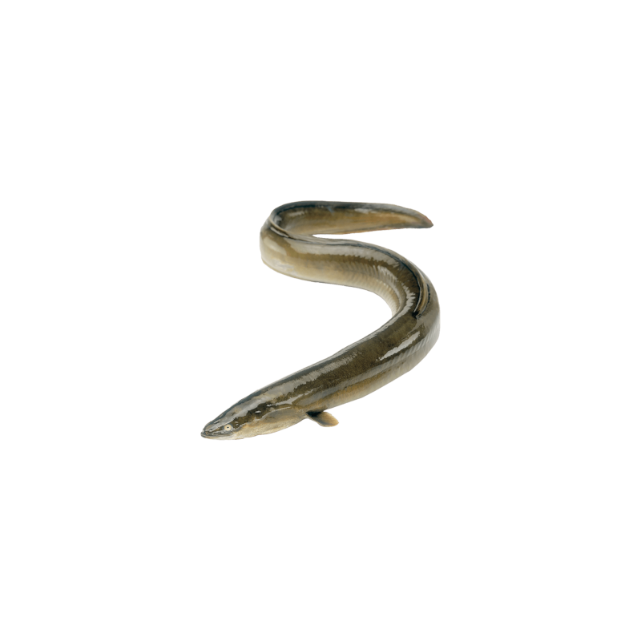
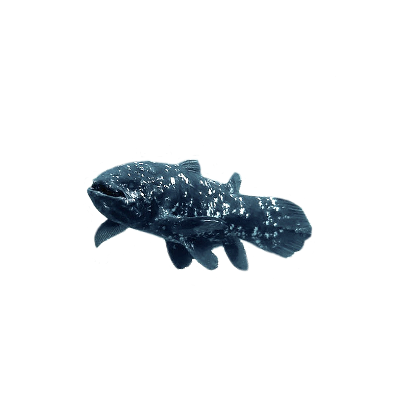
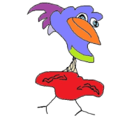

"Hi there! I'm a clownfish, famously known for my bright orange color and white stripes. I have a special relationship with sea anemones - they protect me from predators, and in return, I help keep them clean!"

Greetings! I'm the great white shark, often misunderstood. I'm an important part of the ocean's ecosystem, helping to keep fish populations healthy. Remember, I'm more interested in seals than humans!

"Hello! With eight arms and lots of smarts, I'm an octopus. I can change color and texture to blend into my surroundings and I'm known to be quite the escape artist!"

"Good day! I'm a manta ray, easily recognized by my large size and graceful movements. I filter plankton out of the water to eat as I glide through the sea."

"Hi! I'm the Electric Eel, the spark of the Amazon. I generate electricity to find my way and catch my prey in murky waters. Charged up and ready to explore, I play a shocking role in my riverine ecosystem!"

"Hey there! I'm the Coelacanth, the 'old soul' of the sea. You can call me a swimming time capsule from dinosaur times. I've got funky fins and a tough hide, and I've been around since way before the T-Rex!"

Click Franz to go back to the homepage
Mookie, Rudy, and Franz characters are Copyright Don E. Caplon 2023